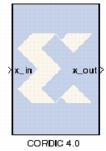

|
|
The Xilinx CORDIC 4.0 block implements a generalized coordinate rotational digital computer (CORDIC) algorithm.A coarse rotation is performed to rotate the input sample from the full circle into the first quadrant. (The coarse rotation stage is required as the CORDIC algorithm is only valid over the first quadrant). An inverse coarse rotation stage rotates the output sample into the correct quadrant.The CORDIC algorithm introduces a scale factor to the amplitude of the result, and the CORDIC core provides the option of automatically compensating for the CORDIC scale factor.
V4.0